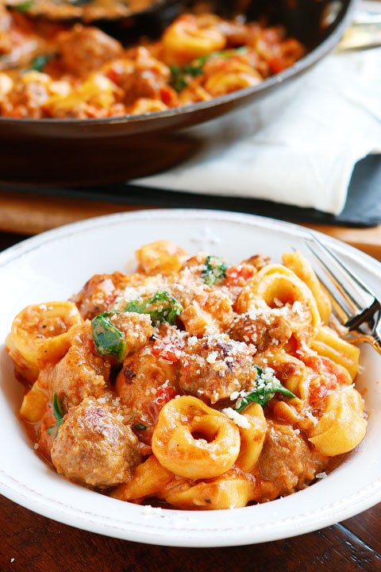

Our Latest Pick-Me-Up...

Blueberry Snack Bars
Ingredients
Bottom Layer
3/4 cup oat flour
2 Tbsp water
1 Tbsp oil (I used palm shortening, use coconut oil if not allergic)
1 Tbsp maple syrup
1 Tbsp molasses
Blueberry Layer
1 cup pureed organic blueberries (frozen is fine but be sure to thaw first)
1 1/2 cup oat flour
1/4 cup maple syrup
1 Tbsp molasses
3 T oil (I used palm shortening, use coconut oil if not allergic)
Last Week's "What's for Dinner"

Italian Sausage Tortellini
Ingredients
Bottom Layer
3/4 cup oat flour
2 Tbsp water
1 Tbsp oil (I used palm shortening, use coconut oil if not allergic)
1 Tbsp maple syrup
1 Tbsp molasses